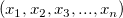

はvectorのサイズです。次のステップは、2つのX値が指定した許容値
はvectorのサイズです。次のステップは、2つのX値が指定した許容値
 で等しいかどうかを検定する手順です。
で等しいかどうかを検定する手順です。
重複しているXデータを置換してXYデータを削減します
必要なOriginのバージョン: 8.1 SR0以降
reducedup method:=mean tol:=1 xcount:=<new>
スクリプトからXファンクションにアクセスする場合、追加のオプションスイッチについてのページを参照してください。
| 表示 名 |
変数 名 |
I/O と データ型 |
デフォルト 値 |
説明 |
|---|---|---|---|---|
| 入力 | iy | 入力 XYRange |
<active> |
入力データ範囲を指定します。 |
| 置換方法 | method | 入力 int |
0 |
同じX値に対応するY値をどの値で置き換えるか指定します。
オプションリスト：
|
| 許容値 | tol | 入力 double |
1.0e-8 |
2つのX値が等しいとするための許容値を指定します。詳細については、以下のアルゴリズムセクションを参照してください。 |
| 出力 | oy | 出力 XYRange |
<new> |
出力範囲を指定します。出力表記のシンタックスを参照してください。 |
| 重複Xのカウント | xcount | 出力 XYRange |
<new> |
重複Xの数を出力するかどうかを指定します。出力表記のシンタックスをご覧ください。 |
このXファンクションは、重複するX値を持つデータ行を削除します。このXファンクションでデータを削減した後、同じX値を持つデータはなくなります。元データで同じX値に対応するY値は、選択した統計量で置き換わります。
次のサンプルでは、同じX値を含むいくつかのデータ行を削減する方法を示しています。
いくつかのXファンクションの同一性の検定では許容値を含みます。このアルゴリズムは、2つのX値が等しいかどうかを検定します。
与えられたvectorデータに対して、最初に昇順でソートし、ソートされたvectorデータが
とします。ここで はvectorのサイズです。次のステップは、2つのX値が指定した許容値
で等しいかどうかを検定する手順です。
 から
から  までのソートしたvectorですべての値をループし、 の絶対値を と比較します。
までのソートしたvectorですべての値をループし、 の絶対値を と比較します。
キーワード:データ削減、代表値、平均、合計、最小値、最大値、統計